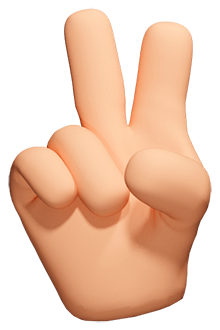
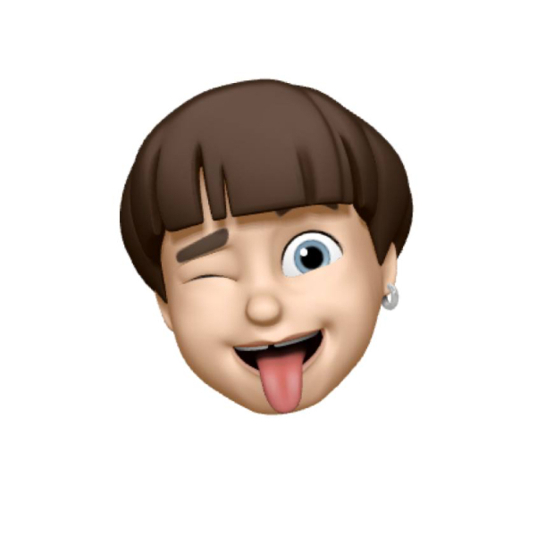
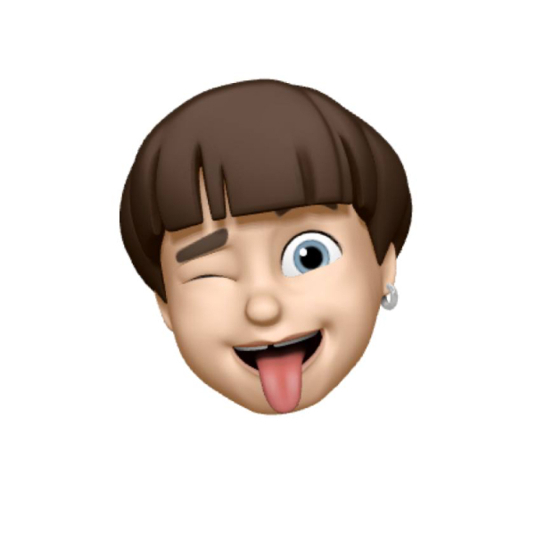

Hi 
This site was created by a group of friends from Russia and Belarus who study English and practice it in their speaking club every (almost) week.
 Sergey Lisovskiy
Vova Lukashov
Sergey Lisovskiy
Vova Lukashov
Credits
Idea
Design
Development
Telegram bot
3D Hands
Font
Sporting grotesque by Lucas Le Bihan, George Triantafyllakos, Maciej Połczyński
Content
Part of the cards for the taboo game were taken from the repository of Pato Lankenau. Other cards and topics were collected from many different open communities on social networks